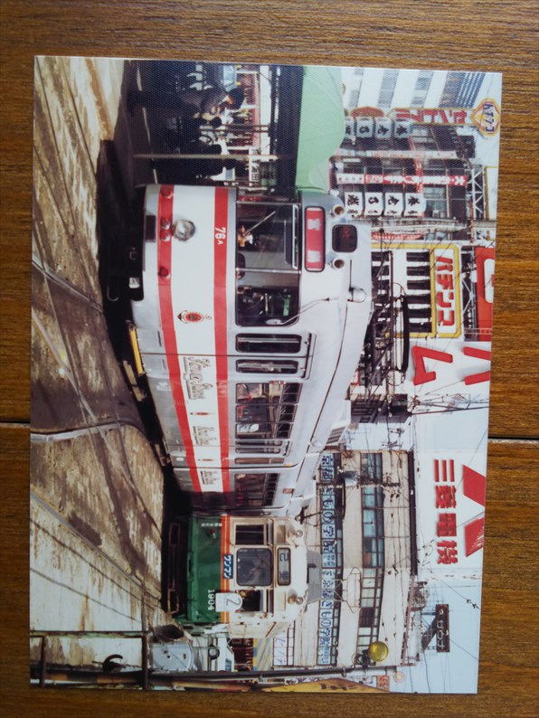

時、可部線には旧型国電が残ってたり、セノハチの補機にはＥＦ５９が活躍してたりと、広島地区はなかなか面白い場所でした。
この時は青春１８よりもお得だった広島ミニ周遊券で訪問しました。
ちなみに世間では、おしんが放送開始になり４月の末にはアクティ大阪が開業します。
昭和５８年４月３日
まずは出発前に大阪駅で撮影ダイカイを行っていま
す。
１２系改造のお座敷列車。
これが撮りたくてわざわざ行ったんか？いや、こん
な１２系の列車なんてくさるほど走ってたからなぁ。
日本海２号。隣はすでに入線しているまつかぜです
ね。
銀河５２号の到着。
昔は春休み程度でも、臨時の銀河が走ってましたね。
さすがに１２系ではなく１４系です。
先日とうとう無くなってしまったスカイブルーの１
０３系。
ん～、何回か撮った中で一番うまく撮れたまつかぜではないでしょう
か？
このまつかぜが撮りたくて大阪駅に行ったんやろか？キハ８２が終わ
るとかかな。
まつかぜ出発と同時に到着した銀河。絵入テールマ
ークはいまいち似合ってない。
せっかくの周遊券ですが、すでに山陽路に昼間の急行は走っておらず、鈍
行を乗り継ぐだけです。
これは福山で見かけた荷物列車。なんかこの時のことは妙に覚えてます。
この当時、ＥＦ５８なんて珍しくもなく、とりあえず撮っとくか、程度で
した。
若干ＳＧの蒸気が出てるのかな。
福塩線の１０５系。
塗装は変わってるものの、今も走ってますね。
ようやく広島に到着。長かった～
さっそく市電の撮影です。
元京都市電が並んでいます。
こちらは元神戸市電ですね。
広電は各地で活躍していた市電が元気に走ってるの
で有名ですね。
左は宮島直通の連接車ですね。
右はどこの車両やろ？
元神戸市電はわかりませんが、元京都市電は今も走
ってます。
今回の旅は初の一人旅ということで、広島のユース
ホステルに３連泊します。
確か夕食までに到着せんとアカンとかいうのがあっ
て、初日はこのあとバスＹＨに移動です。
さて、翌日の広島駅。
可部線から来た旧型国電が停まってます。
今日はまずは可部線の旧型国電の撮影です。

まずは広島の隣の横川駅から電化区間の終点の可部
に向いました。
横川駅の構内には可部線の留置線があって、旧国が
停まっとる停まっとる！
途中の上八木駅で降りて、太田川の河原で鉄橋を渡
る旧型国電を撮影です。
しかしなんでこんな下から撮ったんやろ。
車体がちゃんと写ってないがな・・・
この写真、帰ってから見せた親戚に「ＳＬみたい」
と言われたのは今でも覚えてます・・・
せっかくじっくり撮影したのに。なんか下手っすわ。
上八木駅に戻る途中で。
上八木駅で。
可部駅に到着です。
撮影は堪能したので、広島に戻ります。
三滝駅での交換シーンです。
横川駅に到着です。
今回気づいたけど、中づり広告！
貴重な旧型国電の乗車体験となりました。
横川駅の山陽本線のホームより。
可部線の旧型国電は、なんとか間に合った感があり
ました。
さて、夕方からはセノハチの補機です。初めて瀬野
駅に降り立って旧型電機がうようよしてる姿を見た
時は結構興奮した記憶があります。
まずは補機専用のＥＦ６１の２００番台。いよいよ
八本松に向けて押し出すところです。
旧型電機の置き換えに製造されたものの、欠陥が見
つかって増備中止になった形式で、この頃はＥＦ５
９と一緒に働いてました。
しか～し！当時、瀬野のホームから写真を撮ってる
と笛を吹きながら「撮ったらアカン！」と怒鳴られ
る状態でした。
なのでホームからキレイに撮れたのはこの写真のみ。
なんで旧型電機やなかったんや・・・
安全に過敏になってたんでしょうが、国鉄末期のイ
ヤな思い出です。
以降は外からの撮影。さすがに文句は言われません
でした。
ＥＦ５９といえばこのしましまの塗装。かなり不細
工ですが、もう現役の旧型電機はＥＦ１５ぐらいし
かない時代だったので、文句は言えません。
この丸っこい車体のほうがＥＦ５６を改造したもの
で、ちとダサいっすね。
旧型は重連で押してました。走行シーンを見たかっ
たっす。
しましま柄は片一方だけなので、逆のほうから撮る
とキレイです。

こっちがＥＦ５３改造機で、無骨な感じでカッコい
いっす。
ん～渋い！
ＥＦ５９の置き換えに作られたＥＦ６７も停まってました。
多分広島に移動する電車を待ってるときにこっそりホームで撮ったと
思います。
旅の３日目は、市内観光から。
そして今日の目玉はこいつです。
元ドルトムント市電！

外国の市電を走らせるというすごい発想でした。
車内もドイツ時代のまま。
海外旅行気分で宮島まで移動しました。
宮島に到着すると、元阪急車が停まっててビックリ！
チンチン電車やのになんで普通の電車が？と疑問で
した。
当時でも、休車扱いやった気がします。
このあとは、普通に宮島航路使って宮島に行きまし
た。

最後は最終日の帰りに撮った岡山電鉄。
今とあんまり変わってませんね。